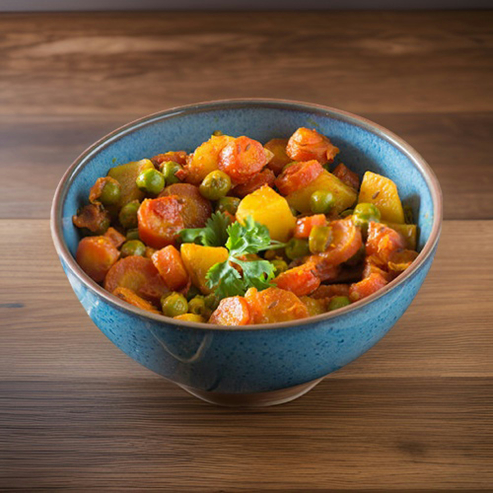

Mixed Vegetable Curry
Mixed vegetable curry is a colorful and wholesome dish made with a variety of vegetables like carrots, peas,
potatoes, and beans. Cooked in a flavorful blend of spices and gravy, it offers a balanced taste of different
vegetables in every bite. It is both healthy and delicious, perfect for any meal.
Go Back